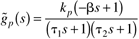
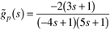

| 1: | Use the IMC-based PID design procedure to find the PID controller for a second-order transfer function
Hint:
First design the IMC, assuming that you will allow the controller to be improper; that is, the order of the numerator is one higher than the denominator. What order filter do you find?
Find the PID parameters, kc, tI, tD, as a function of the process model parameters, kp, t, z, and the filter factor, l. For a perfect model, plot the closed-loop response of y to a step setpoint change in r (as a function of l). (Show your control block diagram.)
Discuss the effect of uncertainty in z (show plots) on closed-loop performance, as a function of l.
|
| 2: | Compare the response of the following first-order + time-delay process, using IMC and IMC-based PID. Discuss the effect of l on the closed-loop stability for both systems.
Do you find that there is a minimum l required for the stability of the IMC-based PID strategy? How does this relate to the recommendations in Table 9-2? Is there a minimum l required for the stability of the IMC strategy? |
| 3: | In Example 9.3, the all-pass formulation was not used for the first-order + time-delay process with a Padé approximation for dead time. Show that the use of an all-pass in the factorization [and semi-proper q(s)] leads to a PID controller in series with a first order lag. |
| 4: | Use the following inverse response process,

Find the IMC-based PID controller if no all-pass is used and the controller is improper. Find the IMC-based PID controller (which must be cascaded with a first-order lag) if an all-pass is used and the IMC controller, q(s), is semiproper.
|
| 5: | For the following integrating process,
show that the IMC-based PID procedure results in a P controller if
and in a PI controller if . |
| 6: | The following process transfer function represents the relationship between boiler feedwater flow rate and steam drum level:

Use the all-pass factorization method to show that the IMC-based PID controller is PD with a first-order lag. Use and a non-"all-pass" factorization to find a PID controller.
|
| 7: | Use the IMC-based feedback controller design procedure to design a PID controller for the following process.
Assume that the IMC filter is . Find kc, tI and tD—these will be a function of the process parameters and l (show all work). What is the closed-loop transfer function? Sketch the expected response of the output to a unit step setpoint change. |
| 8: | Consider the following first-order + time-delay process
Find the tuning parameters for the IMC-based PID controller (no lag). What is the maximum value of kc that you would recommend? Why? |
| 9: | Consider Example 9.2, where q(s) was allowed to be improper. This yielded a PID controller. Now assume that q(s) is forced to be proper (actually semiproper). Find the resulting feedback controller. Elaborate on the control structure. |
| 10: | A stack gas scrubber has the following relationship between the fresh feedwater flow rate and the SO2 concentration in the water leaving the scrubber:
Use the IMC-based PID procedure to find the PID controller (plus first-order lag) for this process.
Hint:
Let the IMC q(s) be semiproper (order of denominator = order of numerator). Which controller tuning parameters does l affect? |
| 11: | Use the IMC-based feedback controller design procedure to design a PID-type controller for the following process. Assume that q(s) is semiproper and tn > 0.
Find the PID tuning parameters (assuming ideal PID) as a function of the process parameters and l (show all work). What is the closed-loop transfer function? Sketch the expected response behavior. |
| 12: | Consider the closed-loop response for IMC when the model is not perfect. Show that there is no offset for a setpoint change for the following model and process transfer functions. Also, find the minimum value of l that assures closed-loop stability when
|
| 13: | Show that the IMC strategy cannot be implemented on an unstable process and must be implemented in standard feedback form. |
| 14: | A styrene polymerization reactor is operated at an open-loop unstable point and has the following input-output model
Design the IMC-based PI controller for this system. Sketch the expected response for a setpoint change. |
| 15: | A vinyl-acetate polymerization reactor is operated at an open-loop unstable point and has the following input-output model, for control of output temperature (°C) by manipulating the jacket temperature (°C). The timescale is minutes.
Design the IMC-based PID controller for this system; that is, find kc, tI, and tD. Show units for all parameters. What is the closed-loop transfer function? Sketch the expected response for a step setpoint change.
|
| 16: | Derive g for the first three elements in Table 9-3. The value of the filter must be one at the location of the unstable pole. |
| 17: | A reactor is operated at an open-loop unstable point and has the following input-output model:

Design the IMC-based PID controller (perhaps with a lead-lag filter) for this system, that is, find the tuning parameters. What is the closed-loop transfer function? Sketch the expected response for a step setpoint change.
|
| 18: | Show that a PI controller cannot stabilize the process
if tu < tp. (Hint: Use the Routh stability criterion.)
The IMC-based PID controller (entry B in Table 9-3) can handle this process. |
| 19: | Consider a first-order + dead-time process with the following transfer function (use this to represent the process in all analyses and simulations)
Now assume two different PI design procedures for this process: The model is first-order + dead time with the known parameter values; and the model is integrator + dead time where k = 1/10 = 0.1.
For a small time delay (0.5 minutes), compare the performance of the two PI control strategies for step setpoint changes. Discuss the effect of l. Also compare the performance of the two PI control strategies for step input load disturbance changes (let the load disturbance transfer function be equal to the process transfer function). Discuss the effect of l. For a larger time delay (5 minutes), compare the performance of the two PI control strategies for step setpoint changes. Discuss the effect of l. Also compare the performance of the two PI control strategies for step input load disturbance changes (let the load disturbance transfer function be equal to the process transfer function). Discuss the effect of l. Summarize your results and make recommendations.
|
| 20: | Consider a first-order + dead time process with the following transfer function (use this to represent the process in all analysis and simulations):
Compare the setpoint performances of PI, improved PI, PID, and PID + filter tuning rules from Table 9-2 (rows A–D). Discuss the effect of the closed-loop time constant, l; for what values is unstable or poor performance obtained? |
| 21: | Consider the following process model with a RHP zero
Use the IMC-based PID design procedure to find a PI controller. Assume that an all-pass factorization is used for the RHP zero. Also, assume that q(s) is semiproper. Use an IMC filter with the form
and solve for g to give exactly a PI controller (no other terms).
Find the proportional gain and integral time as a function of the model parameters (k, b) and l. |